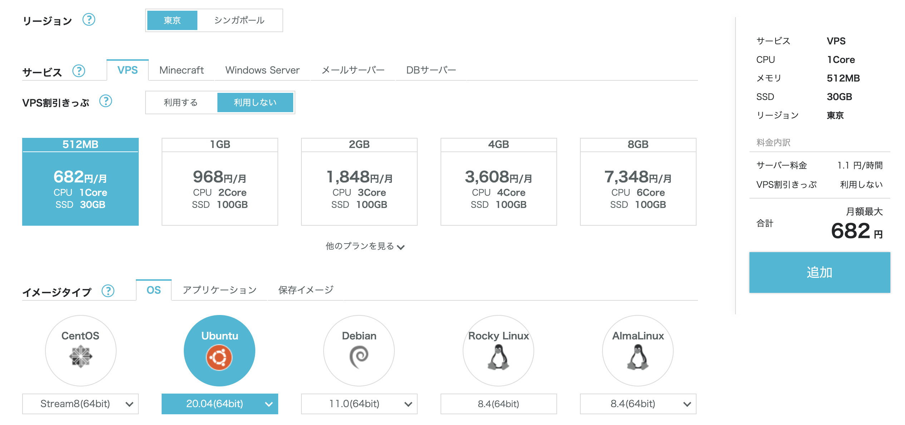
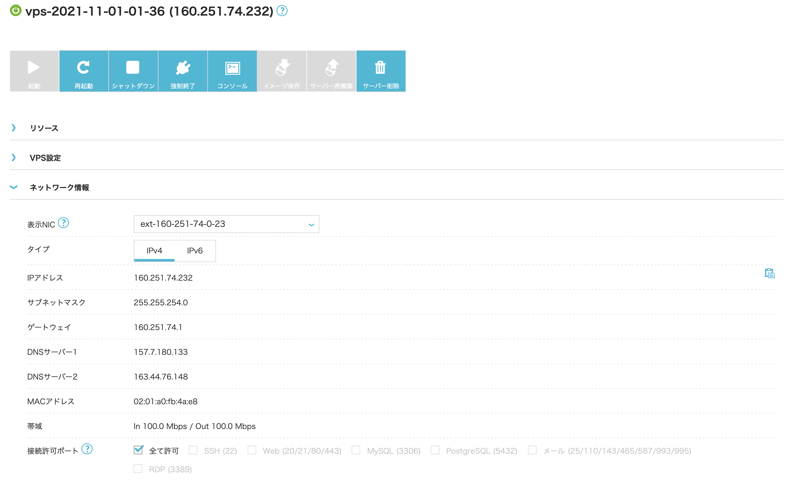

Springを使ってお問い合わせフォームを作るその６
Springを使ってお問い合わせフォームを作るその６です。 今回は作ったアプリケーションをサーバーにデプロイしていきます。
conoha にログインし、サーバーを立てます。 OS は Ubuntu の20系で、一番小さい（安い）インスタンスを作成します。

サーバーが起動したらIPアドレスが表示されるのでそのIPアドレスをコピーします。
ここでは 160.251.74.232 がサーバーのIPアドレスです。
このIPアドレスはサーバーを起動する度に変わるので 160.251.74.232 ではなく表示された値を使用してください。

サーバーにログインします。
ssh root@160.251.101.154
初回接続時は以下の警告が出るので yes と入力します。
Are you sure you want to continue connecting (yes/no/[fingerprint])?
パッケージの一覧、パッケージ本体の更新を行います。
何か聞かれたらとりあえず Y を入力します。
apt -y update
apt -y upgrade
Java11をインストールします。
apt -y install openjdk-11-jdk
11系が入ったことを確認します。
java --version
openjdk 11.0.11 2021-04-20
OpenJDK Runtime Environment (build 11.0.11+9-Ubuntu-0ubuntu2.20.04)
OpenJDK 64-Bit Server VM (build 11.0.11+9-Ubuntu-0ubuntu2.20.04, mixed mode, sharing)
MySQLをインストールします。
apt -y install mysql-server
MySQLが入ったことを確認します。
mysql --version
mysql Ver 8.0.27-0ubuntu0.20.04.1 for Linux on x86_64 ((Ubuntu))
以下のコマンドで MySQL の初期設定を行います。
読みながら進めてください、基本は Y で大丈夫です。
ここで root ユーザーのパスワードを設定します。
mysql_secure_installation
MySQLサーバーにログインして、アプリケーション用のテーブルなどを作っていきます。
mysql -u root -p
DB名に - があるとバッククオートで囲む必要があるみたいです。
create database `swiswiswift-db`;
use swiswiswift-db;
create table contact(
name varchar(255) not null,
email varchar(255) not null,
message varchar(1023) not null
);
アプリケーション用のDBユーザー、spring を作ります。
sdfYsdfsdfijhsdf&*8sd& はパスワードです。
CREATE USER 'spring'@'127.0.0.1' IDENTIFIED BY 'sdfYsdfsdfijhsdf&*8sd&';
GRANT ALL PRIVILEGES ON *.* TO 'spring'@'127.0.0.1' WITH GRANT OPTION;
FLUSH PRIVILEGES;
CREATE USER 'spring'@'localhost' IDENTIFIED BY 'sdfYsdfsdfijhsdf&*8sd&';
GRANT ALL PRIVILEGES ON *.* TO 'spring'@'localhost' WITH GRANT OPTION;
FLUSH PRIVILEGES;
一度 MySQL からログアウトし、spring ユーザーでログインできることを確認します。
mysql -u spring -h 127.0.0.1 -p
インストールした MySQL のバージョンが 8.0.27 で新しいので、アプリケーションの build.gradle の mysql-connector-java のバージョンを更新します。
implementation 'mysql:mysql-connector-java:8.0.27'
再度ビルドし、.jar を作成します。
./gradlew build
作成した .jar ファイルをサーバーに転送します。
scp spring-0.0.1-SNAPSHOT.jar root@160.251.101.154:/opt
転送後再度サーバーにログインします。
ssh root@160.251.101.154
/opt ディレクトリに移動し、アプリケーションを起動します。文字列に特殊文字（&とか）が含まれると別のコマンドと認識されてしまうので、シングルクオートで囲ってあげます。
java -Xms128M -Xmx128M -jar spring-0.0.1-SNAPSHOT.jar \
--server.port=80 \
--spring.datasource.url=jdbc:mysql://127.0.0.1:3306/swiswiswift-db \
--spring.datasource.username=spring \
--spring.datasource.password='sdfYsdfsdfijhsdf&*8sd&'
ブラウザで 160.251.101.154 にアクセスすると作成したアプリケーションが表示されているはずです。
control + z でサスペンドし、jobs コマンドでプロセスIDを確認し、bg コマンドでバックグラウンドで動かすこともできます。